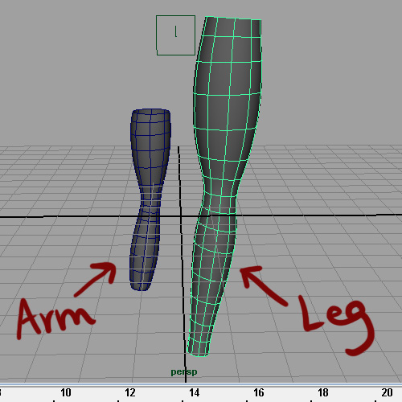
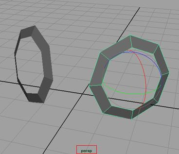

You are here: Home → Organic Modeling
Organic Modeling
Remember to File->Project->Set your current project to your UCBUGG Lab project.
It's useful in the future to have a reference image inside your Maya file to model off of in the orthogonal views like this:
In this tutorial, however, we're going to model without reference planes. We are going to model the legs, arms, hands, feet, body, and head as separate pieces and then merge them later on. Keep in mind that there are many different approaches to character modeling. I chose to do it in this Frankenstein sort of way, because it is easier for me to work with smaller meshes, and then connect them later.
Final Model
Note: It's important that you try and follow this tutorial as closely as possible because as you go deeper into the tutorial, we will assume that most of your edges and vertices are in relatively the same position as ours. With that said, this could turn into a very long tutorial if you try to follow everything exactly. So just try to make good judgment decisions for yourself. And if you do happen to encounter a bug that can't be fixed, it is possible you may have to restart the tutorial (saving different versions of your file every once in a while can help). Don't be discouraged though, the more you model the better you get!
Modeling the Arm
Make sure your menu is set to 'Polygons'
First, create a cylinder: Create → Polygon Primitives → Cylinder.
Change the cylinder options under INPUTS in the Channel Box. To show the channel box, use the right most button in the upper right:
Note: In Maya 2011 the button in the upper right looks like this:
You may have to "unfold" the polyCylinder# area underneath "inputs" by clicking on it.
Adjust the highlighted fields as shown so that the cylinder has 8 sides, 1 height subdivision, and 1 cap subdivision* and is centered on the grid.
Delete the caps. (Go into face mode, shift+select the faces, delete.) Then, scale your cylinder tube so that it is longer and skinnier.
Insert an edge loop: Edit Mesh → Insert Edge Loop Tool → Option Box. Make sure relative distance from edge, Auto complete, and Fix Quads are all checked. Click one of the vertical edges and Maya should automatically draw an edge loop and let you drag the loop up and down. Select the edge loop by double clicking on it and scale the edge loop down.
Add more edge loops and scale them to make an hour-glass arm shape. Your final leg should have edge loops that are pretty evenly spaced, with more spans where the "knee" is supposed to be.
Note: There is a slight bend in the arm to give an indication of which direction the ik handle should work later on in rigging. You can achieve this bend as well by selecting the top half of the edges, rotating, and then translating them.
When you're done with your arm, name it "Arm1" in the Outliner.

Go to the channel box and create a layer: Right-click on "Layers" → Create Empty Layer.
Name layer1 "ARMS" by double clicking on it.
Add Arm1 to ARMS: select Arm1 (in the view port or the outliner) → right click on ARMS → Add Selected Objects. Then, Hide the layer by un-checking the "V" in the leftmost box. Now we can move on to modeling other parts of the body with a clean grid.
Modeling the Leg
This is essentially the same as modeling the arms, but we're going to use a 10-sided cylinder instead.
Create a cylinder: Create → Polygon Primitives → Cylinder.
Change the INPUTS in the channel Box so that the cylinder has 10 sides and is centered on the grid. Then, add edge loops and scale edges/vertices as you did before. Here is what the arm and leg should look like in relation to each other. (Press 3 to show your models in smooth preview.) You can add the bend in the leg as well.

When you're done tweaking your leg, name it "Leg1" in the Outliner. Once again, create a layer, name it "LEGS," add Leg1 to it, and hide the layer.
Modeling the Body
For the body, we are going to create a torso with holes for the arms and legs we made. We'll go through step by step how to make this. We are aiming for something like this:
Create a cylinder: Create → Polygon Primitives → Cylinder.
Change the INPUTS in the channel Box so that the cylinder has 10 sides and is centered on the grid. Rotate it 90 degrees so that it is laying flat on the grid. Then, delete all the edges on the ends as shown:
Use Split Polygon Tool and draw in edges as shown: Edit Mesh → Split Polygon Tool.
Now, insert edge loops and scale them. Scale down the end vertices.
Add a few more edge loops. Your body should look like this so far:
Next, insert another edge loop as shown below. (I temporarily hid the grid to better show where the edge loop should go.)
To make the holes for the legs, Select the following faces, and delete.
Now, we take the 8-sided and 10-sided holes, and move the vertices until they form round openings to match the size of the arms and legs we made before. To move the vertices, simply select them one by one and use the translate tool in the orthographic views.
You will probably have to insert an edge loop to make the spans more even.
Tweak those vertices with the translate tool so that the body is smooth. You can view the different settings of the translate tool by clicking the tool settings icon in the upper right hand corner:
Checking the Normal or Normals average box comes in handy when trying to adjust vertices on an organic object:
Your mesh should now look like this:
To create another edge so that the topology of the hole is better contained, we can simply extrude and scale the edges inwards as shown below. Edit Mesh → Extrude. Then, repeat with the arm hole.

Make sure your arms and legs are the right size in relation to your torso. Make your ARMS and LEGS layers visible, and position your arm and leg in relation to the body as shown below.
Make sure the vertices of your arms and legs line up correctly with your body. Change the display to Wireframe on Shaded. Shading → Wireframe on Shaded.
Hide the ARMS and LEGS layers again.
To make a hole for the head, go to Top View, Select the following faces, and delete.
Now we're at a point when we can just model half of the model and use Maya Instancing to mirror what we're doing. So, we're going to cut our model in half-first by inserting an edge loop, and then deleting all the faces on the right side.
Insert edge loop down the middle: Edit → Insert edge loop → Option Box. Make sure the boxes Multiple edge loops and Use equal multiplier are on. Also, make sure Number of edge loops is set to 1. (You can experiment with checking different options to see how they work.)
Create an instance: Edit → Duplicate Special → Option Box. Make sure the boxes Instance and Parent are checked. Depending on what orientation you modeled your body, you will have to play around with which how to Scale your instance. In my case, I made the x value -1 so that my body would be mirrored across the x axis.
Go into Top View, and translate/scale the vertices so that you get the rough shape shown below. It may be necessary for you to add more edge loops, or use the split polygon tool to get the deformation you want. (Remember, now you only have to modify half of your body, and the other half will automatically pick up the changes.) Aim for the shape and topology shown below.
Note: If you are having trouble scaling a continuous edge loop, it may help if you shift-select the two halves of the body and go to Mesh->Combine. This will combine the meshes so that that you can select a group of edge loops or vertices and scale them all together at once. Remember to select the body and hit Mesh->Separate though once you are finished so that the mesh is back to its instanced state.
At this point, you have to let your artistic self kick in and modify the shape of the body so that it looks like that of a frog. We can't really tell you what to do from here except to play around with edges/vertices and all the tools you've learned so far so whenever you feel that you have a body shape that you like, move on.
Create a layer called BODY, add your mesh to the layer, and hide it.
Modeling the Head
There are many ways to model a head. Some people like to start from a cube, and insert edge loops from there. In our case, we are going to start by modeling eye patches.
Create a cylinder: Create → Polygon Primitives → Cylinder. Go to the channel box and adjust the cylinder so that it has 8 sides and is centered on the grid. Delete caps of the cylinder, scale vertices and bring them up to make a donut as shown:
You might have noticed that your pivot is no longer in the center of the donut. Center your pivot so that it's easier to work with. Select your donut, Modify → Center Pivot. You can also move the pivot manually by holding down the "d" key.
Next, duplicate your donut. Select your donut, Edit → Duplicate. Or, press Ctrl + d. Now, rotate your eye patches and place them at slight angles to each other (as shown in top view and perspective views below):

Make sure that the two donuts are symmetric across whichever axis you choose. You can do this by going into the attribute editor and checking their transforms and rotations. Here are the values I used, but depending on how you positioned your eyes, they might not work for you.
Turn the eye patches into one object. Shift-select one after the other, Mesh → Combine.
Next, we're going to use the Append to Polygon tool to connect the two pieces. Select your eye patch mesh, Edit Mesh → Append to Polygon Tool. First click on one edge, and then click the edge you want to connect it to. Maya should draw a pink face for you. Press enter.
Add one more face with the Append to Polygon Tool. Then, select the five bottom edges and extrude.
Now we're at a point when we can use Maya Instancing to mirror what we're doing (like we did before). Insert edge loop down the middle: Edit → Insert edge loop → Option Box. Make sure the boxes Multiple edge loops and Use equal multiplier are on. Also, make sure Number of edge loops is set to 1.
Delete half the faces, and create an instance: Edit → Duplicate Special → Option Box. Make sure the boxes Instance and Parent are checked. Depending on what orientation you modeled your body, you will have to play around with which how to Scale your instance. In my case, I made the x value -1 so that my body would be mirrored across the x axis.
Here are a series of 'extrude,''append to polygon,' and 'merge' steps.
So far, we've used 'extrude' and 'append to polygon,' but not 'merge.' To merge vertices, shift+select them, Edit Mesh → Merge.
Remember, just work with one side, and Maya should automatically mirror everything you do. Make sure to work in perspective and orthogonal views.

We are going to model the eyelids closed, so that they can be opened in rigging later. Add edge loops as shown below and select faces:
Look at the eye patches from the inside, and duplicate the eye patch faces, and offset them slightly. Select faces, Edit Mesh → Duplicate Face → Option Box. Make sure 'Separate duplicated faces' is unchecked.
Next, we are going to connect the eye patch to the head by merging vertices.

Now continue merging the rest of the vertices.
Before you go on, quickly go into smooth mode to make sure there are no extra weird deformations happening within your model. If there are, it may be because you have edges right on top of eachother or extra vertices. (If you are working in lab, feel free to ask for help! If you are working from home, send us an email or come to office hours!)
Here are a series of steps to continue adding faces to the head: Remember, you can scale a group of vertices in towards each other to line them up straight.
To make the bottom lip and jaw, select these faces and duplicate face. Edit Mesh → Duplicate Face.
Turn the bottom lip and head into separate meshes. Shift + select the bottom lip and head, Mesh → Separate. (*Note: your instance will disappear when you do this. Don't worry, you can simply create the instance again later.)
Mirror the bottom lip. Delete the old lip. Adjust vertices. Edit Mesh → Mirror Geometry Option Box.
Now turn the bottom lip and head back into one mesh. Shift + select the bottom lip and head, Mesh → Combine.
Continue building the head as follows:
Continue extruding edges and merging vertices until you get something like this:
Create a Maya instance again. Your head should look something like this now:

Now, we are going to make the inside of the mouth:
Note: If you can't scale the edge loop correctly in the 3rd picture below, you can move those edges around manually.
*Note: You can merge multiple pairs of vertices at a time. Edit Mesh Merge Option Box. Make sure Always merge for two vertices is checked, and that you set the threshold to something low, like .05:
Create a layer called HEAD, add your model to the layer, and hide the layer.
Now we are going to revisit the arm and leg, and model a hand and foot.
Modeling the Foot
Since you're probably familiar with the tools by now, just follow this visual guide, starting from a box:
Press 3, and your foot should look like this:
Modeling the Hands
This is similar to modeling the foot. Follow the visual guide:
Press 3, and the should look like this:
Connecting All the Body Parts
Now that we have all the body parts, we simply have to make sure edge loops line up, and then start merging vertices!
Un-hide all your layers, and place them like so:
Now, adjust edge loops and vertices so that you can merge them.
Now, create an instance, and merge the two halves.
Reference for Human Character Modeling
Extra for Experts:
Now that you have a complete model, here's how to create a master controller so that you can perform transformations on your model easier while maintaining the separate body parts. You will be creating controllers quite often when you start rigging, so here's a quick introduction.
Here I have a main group called "wholeobject" which is a group of 3 objects in my file, a hat, a group of legs, and a group for the eyelens.
First, I want to create a NURBS circle, so I go into Create->Nurbs Primitives and make sure Interactive Creation checkbox is turned OFF. Then I can create the actual circle by going to Create->Nurbs Primitives->Circle. I want to scale up this circle, place it at the base of my character, and rename it to "master_controller" like this.
Now to finish it, all I have to do is to middle-click and drag the "wholeobject" group into the "master_controller" label in the outliner. Now when I want to perform transformations on my object I can just click on the master_controller because it will select my entire object! Yay! That completes this tutorial!
Originally by Christine Li